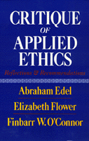

Distinguished philosophers critique applied ehtics, past and present
Distinguished philosophers critique applied ehtics, past and present


 Distinguished philosophers critique applied ehtics, past and present
Distinguished philosophers critique applied ehtics, past and present

|  |
Critique of Applied EthicsReflections and RecommendationsAbraham Edel, Elizabeth Flower and Finbarr W. O'Connorpaper EAN: 978-1-56639-158-0 (ISBN: 1-56639-158-X) |
"Part One is historically rich and analytically sophisticated. It is unquestionably the best treatment of the applied ethics landscape. In Part Two, the authors have an uncanny sense of the issues and a remarkable ability to demythologize the jargon temple of doom, such that controversial philosophical positions are rendered clear.... I look forward to teaching from this book."
—John J. McDermott, Distinguished Professor of Philosophy and Humanities, Professor and Head of Humanities in Medicine, Texas A&M University
Over the past two decades, applied ethics has turned increasingly toward theories that explore ethical questions faced by a variety of professions and away from classic moral concerns. Abraham Edel, Elizabeth Flower, and Finbarr O'Connor utilize examples of professional, public policy, and personal decision making to illustrate the strengths and limitations of the application of ethics in a rapidly changing world.
They first discuss the emergence of applied ethics and how it functions within a philosophical tradition. They are not concerned, however, with solving the problems they expose, but with employing them as a means to critique applied ethics. Using human rights and health and welfare issues, the authors examine the subsequent ethical stumbling blocks that surround the "moral order" of these social concerns. Through a historical discussion of the abundant ethical theories posited since the Enlightenment, they suggest ways to decide which can serve as intellectual tools for applied ethics and consider how knowledge and experience enter into any moral decision.
Turning to the factors pertinent in the analysis and solution of moral problems, they dissect the underlying influences on the practice of ethics, the way in which a moral problem is diagnosed and its relevant contexts established, the ensuing conflicts between the concerns of the individual and of society, and the degree of inventiveness in issues of morality. The authors suggest that, instead of viewing theory as a set consequence derived from prior applications, relating theory to practice will engage a process of mutual aid, from which each element will learn, refining and improving the other.
Preface
Introduction
Part I: Philosophical Backgrounds for Applied Ethics
1. Practical Moral Problems in an Age of Rapid Technological and Social Change
2. Moral Orders
3. Ethical Theories: Intellectual Tools for Applied Ethics
4. Knowledge in Moral Decision
Part II: From Diagnosis to Moral Decision
5. Diagnosis
6. Context
7. Formulating the Ethical Issue
8. Jurisdiction, Roles, and Occupations: The Regionalization of Morality
9. Institution and Individual
10. Discovery and Innovation
11. The Decision Factor and Its Dimensions
12. Some Theoretical Conclusions, or How Practice Educates Theory
Notes
Index
Abraham Edel is Research Professor, University of Pennsylvania, and Distinguished Professor of Philosophy Emeritus, City University of New York. He has also written The Struggle for Academic Democracy: Lessons from the 1938 Revolution in New York's City Colleges (Temple).
Elizabeth Flower is Professor of Philosophy, University of Pennsylvania.
Finbarr O'Connor is Professor of Philosophy, Beaver College. The three collaboratively edited Morality, Philosophy, and Practice: Historical and Contemporary Readings and Studies (Temple).
© 2015 Temple University. All Rights Reserved. This page: http://www.temple.edu/tempress/titles/586_reg.html.